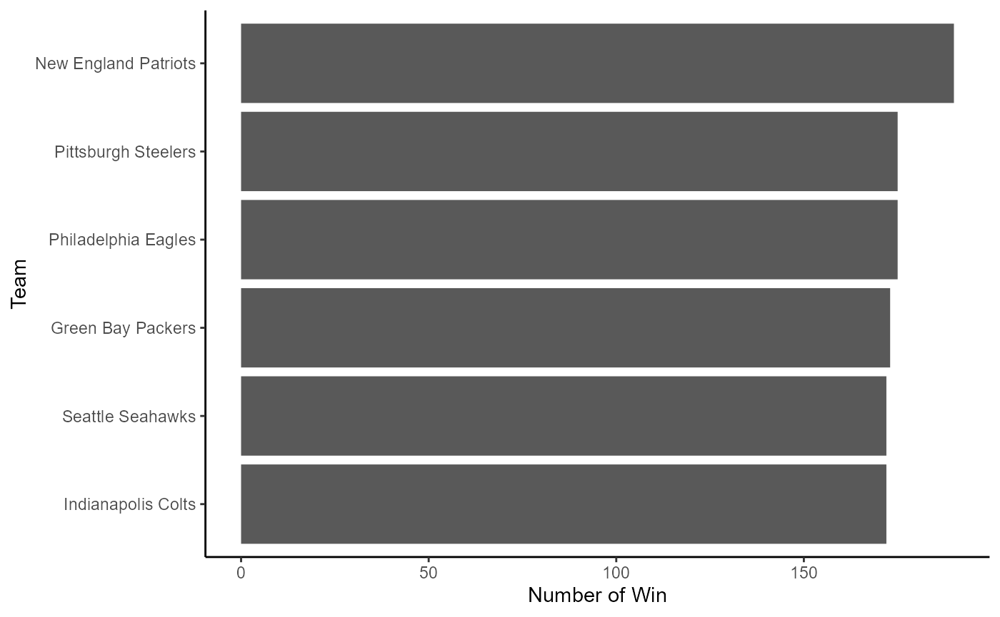

National Football League
nflexplorer.RmdIntroduction to nflexplore
This package is created to explore the world of National Football League (NFL). NFL is the premier professional American football league in the United States, consisting of 32 teams divided into two conferences and four division each. It is known for its physical gameplay, complex rules, and culminates in the Super Bowl, one of the world’s most-watched sporting events. The package offers users access to fundamental NFL facts and engaging datasets for game attendance and results. It also includes convenient functions to launch an interactive Shiny App for NFL statistics and plot winning trend graphs for individual NFL teams with ease. There is also additional function that will help you calculate the mean for each level of the categorical variable.
Datasets and Use Case
This document introduces you to nflexplore’s usage. For instance, there is two sample datasets that can be called, they are:
attendance : Dataset that shows the total attendance of
NFL game per week and per team, spanning multiple years from 2000 until
2019.
games : Dataset that contains information about weekly
games, providing details about the winning team and game
performances.
By utilising these two datasets, we will be able to perform a simple data analysis that will add a new knowledge about NFL in general. Let’s create some example:
1. Plotting a yearly attendance (using attendance
dataset)
# Create a plot by summarising attendance number into yearly basis
attendance %>%
filter(week == 1) %>%
group_by(year) %>%
summarise(total = sum(total),
home = sum(home)) %>%
ggplot(aes(x = year, y = total, group = 1)) +
geom_line(size = 1) +
geom_point(size = 3) +
theme_classic() +
scale_y_continuous(labels = scales::comma)2. Top 5 team with most win (using games dataset)
#Creating home/away win table
home_away <- games %>%
group_by(year, home_team) %>%
summarise(home = sum(home_win),
away = sum(away_win)) %>%
pivot_longer(c("home","away"),
names_to = "home_aways",
values_to = "win_number")
#Summarising home/away win table
home_away_summ <- home_away %>%
group_by(home_team) %>%
summarise(total_win = sum(win_number))
#Plotting for Home & Away Win
home_away_summ %>%
slice_max(total_win, n = 5) %>%
ggplot(aes(x = reorder(home_team, total_win), y = total_win)) +
geom_bar(position = "dodge", stat = "identity") +
coord_flip() +
xlab("Team") +
ylab("Number of Win") +
theme_classic()
Functions and Use Case
Apart from dataset, this package also include some functions. There are three functions that serves to increase your knowledge on NFL, which are
run_app: This function will open a Shiny App that has
been created by the author, which provides preliminary knowledge about
NFL.
win_trend: This function will return a home/away winning
trend of a certain NFL team.
calculate_means: This function will calculate the mean
for each level of the categorical variable and returns a named numeric
vector with the means.
Let’s explore the ability of each function:
1. run_app function
Whenever you call this function, it will open up a Shiny App which provides preliminary knowledge about NFL. This is an interactive web application, you can play around with the plot. For example, you can change the filter provided in the application, and the plot will change accordingly. In addition to that, there is a short video explaining how NFL games is played, including the game structure, how the teams score the points, and rules of the game.
run_app()2. win_trend function
To run this function, you need to prepare one NFL team that you want to see their winning trend. You can refer to the NFL official website for the complete list of the team here. Once you have identified what team that you want to explore, you can input it into the function. Here is the example:
win_trend("Dallas Cowboys")3. calculate_means function
This function takes a numeric vector and a categorical vector as input. It calculates the mean for each level of the categorical variable and returns a named numeric vector with the means. Here is the example how to use this:
numeric_data <- c(10, 15, 20, 25, 30, 35)
category_data <- c("A", "B", "A", "B", "A", "B")
calculate_means(numeric_data, category_data)
#> [1] 20 25